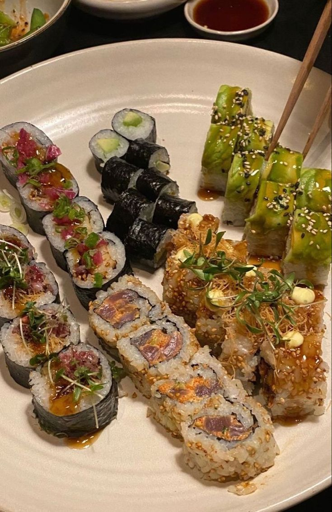
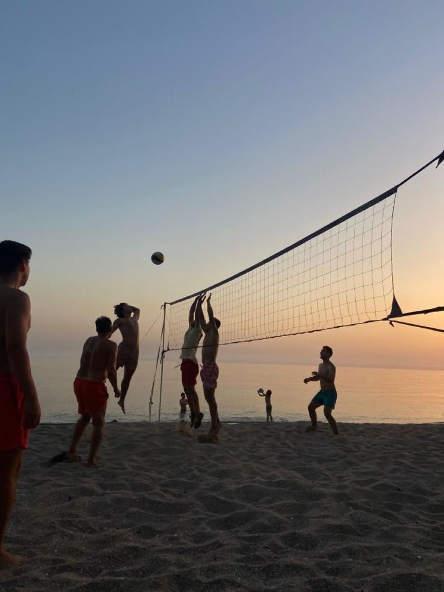
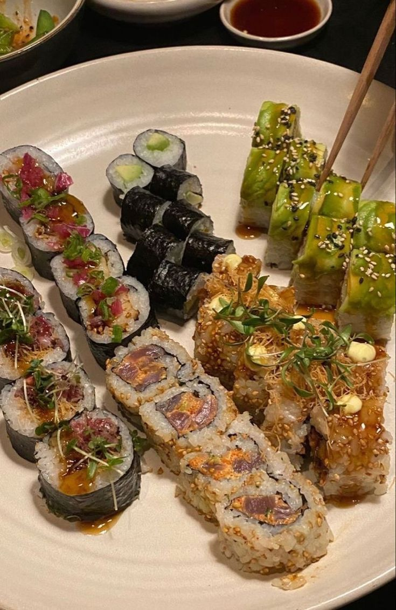
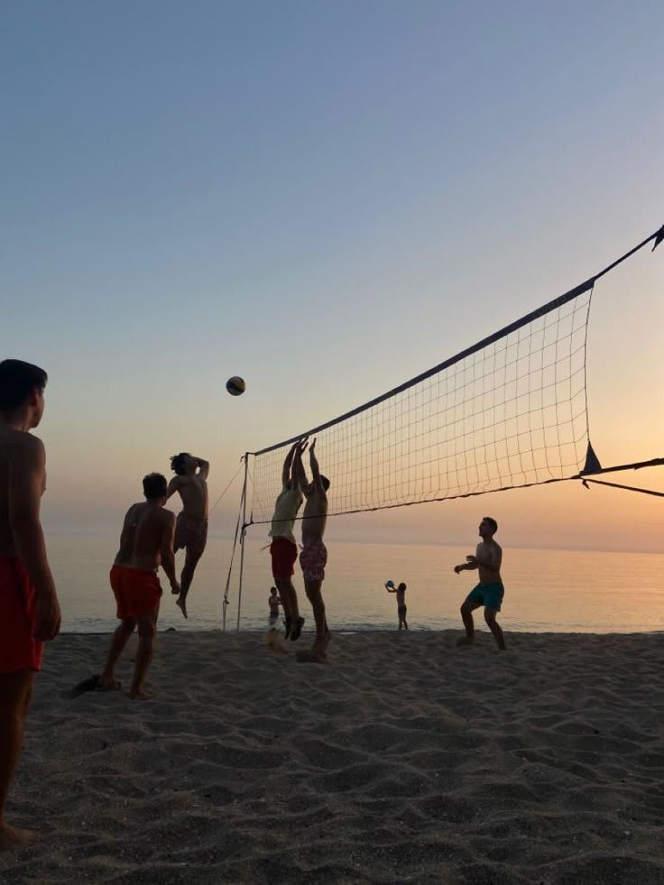

Over mij
Hoi hoi, op deze website ga ik iets vertellen over mijn hobby's, droombaan en huisdieren.
Maar voordat ik daar aan begin zal ik alvast een klein beetje iets over mezelf vertellen.
Ik ben Nikita ik ben 14 jaar oud, ik zit in 4 havo op ISW Hoogeland en dit is mijn website voor informatica. Ik hou van bakken, me twee katten Flame en Donder en vooral van lekker eten mijn favo eten is sushi, maar ik vind echt veel meer dingen ook echt super lekker zoals: pasta's, poke bowls, iets zoetigs en noem maar op. Ook hou ik ervan om op vakantie te gaan en de wereld ontdekken. Ik hou eigenlijk wel van alle soort vakanties maar me favo blijft toch wel echt op een goed resort, lekker eten, goed weer en zonnen. En als aller laatste vind ik kleding/fashion ook belangrijk, omdat dat de manier is hoe je je kan uiten.


 


